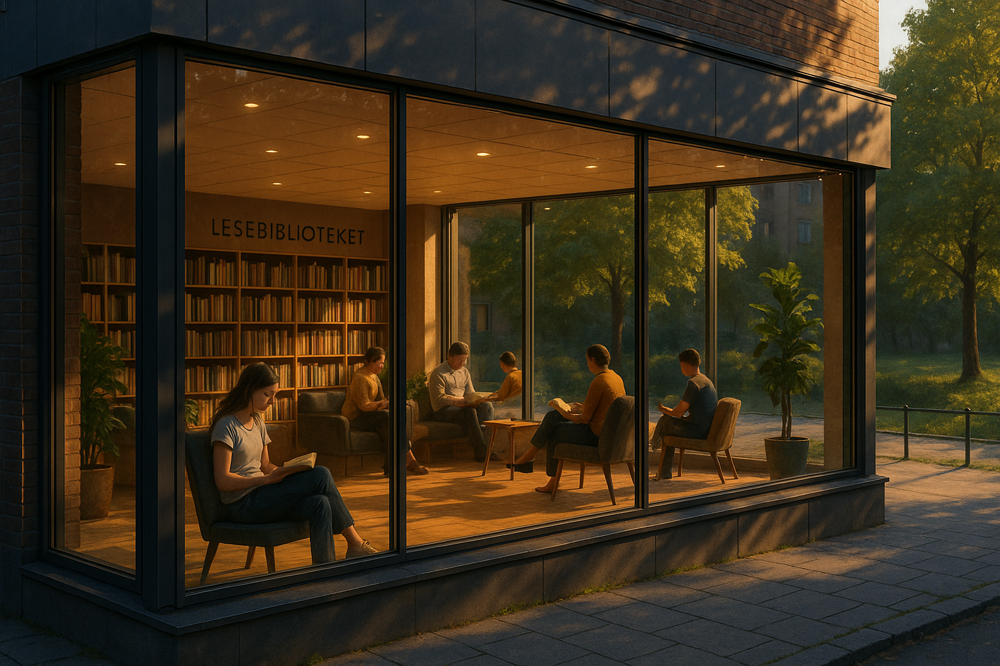
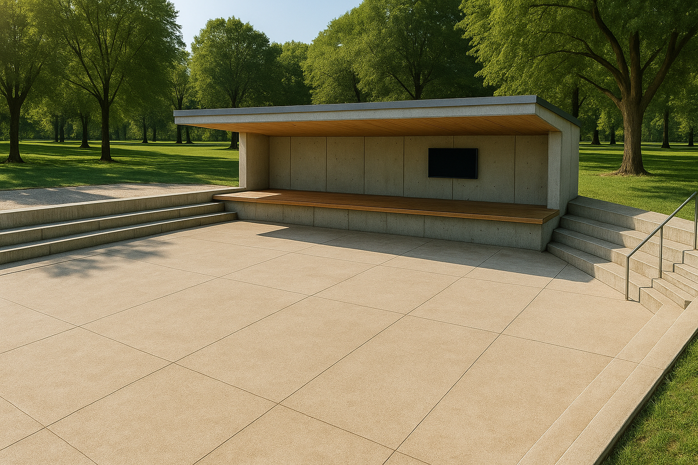

Paradisavisa
En uavhengig avis for idédebatt, kultur og samfunn – artikler, bilder og analyser.
Fra idé til praksis
Et samfunn bygges ikke av tekster alene. Her presenterer vi prosjekter, initiativer og ideer som utforsker fellesskap, læring, byrom og nye måter å organisere hverdagen på.
En uavhengig avis for idédebatt, kultur og samfunn – artikler, bilder og analyser.
Et samfunnsteknologisk prosjekt for kollektiv læring og ansvarlig kunnskapsdeling.

Et åpent rom for lesing, læring og samtaler – uten kjøpepress eller prestasjonskrav.

En sosial sportsklubb der aktivitet og fellesskap møtes – uten prestasjonspress.
Åpne, lyse paviljonger og møteplasser i parker og byrom.
Under planleggingEn idé for roligere, grønnere og tryggere byrom der mennesker får mer plass.
Idé og visjonEt konsept for grønne korridorer og forbindelser for fri ferdsel.
Under utviklingEt forslag til hvordan grunnleggende behov kan organiseres gjennom fellesskapet.
Les om modellenEt filosofisk og kunstnerisk prosjekt som utforsker lys, liv og menneskelig klarhet.
Ekstern side